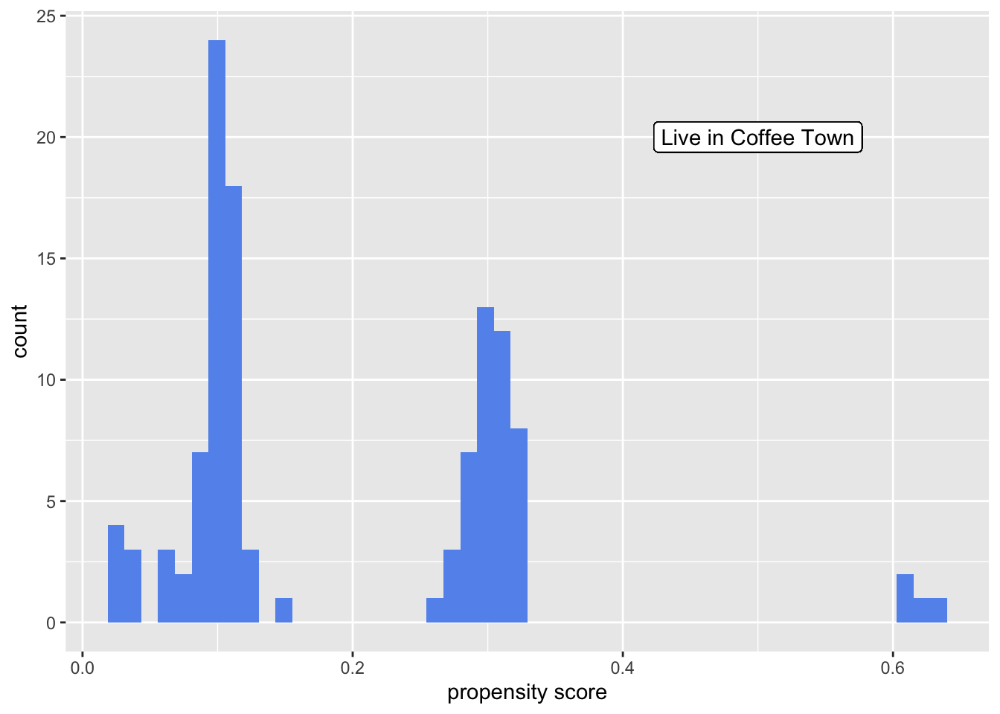

Lab 03 - Using Propensity Scores
Dillon Ebner
2022-03-29
library(tidyverse)
library(smd)
library(broom)
library(ggplot2)
library(ggdag)Exercise 1
coffee_town <- read.csv("coffee_town_df.csv")There are 1,100 observations in the data set.
nrow(subset(coffee_town, coffee_town == "1"))## [1] 113Only 113 of the individuals are in the exposed group, or live in coffee town.
The columns or variables of the data set are:
- Whether or not someone lives in coffee town
- How many cups of coffee one drinks per day
- The age
- The job difficulty
- Smoking history
coffee_town <- coffee_town%>%
filter(!is.na(coffee_town))It does not look like there are any missing variables as after filtering the data every observation remains
Exercise 2
library(gtsummary)
coffee_town %>%
tbl_summary(
by = coffee_town,
include = c(
"age",
"job",
"smoke")
) %>%
add_overall()| Characteristic | Overall, N = 1,1001 | 0, N = 9871 | 1, N = 1131 |
|---|---|---|---|
| age | 39 (34, 44) | 39 (34, 43) | 49 (14, 52) |
| job | |||
| easy | 760 (69%) | 707 (72%) | 53 (47%) |
| hard | 212 (19%) | 200 (20%) | 12 (11%) |
| none | 128 (12%) | 80 (8.1%) | 48 (42%) |
| smoke | |||
| current | 55 (5.0%) | 53 (5.4%) | 2 (1.8%) |
| former | 64 (5.8%) | 60 (6.1%) | 4 (3.5%) |
| never | 981 (89%) | 874 (89%) | 107 (95%) |
| 1 Median (IQR); n (%) | |||
Based on the table it seems that most people living in coffee town tend to be older on average compared to people that do not (49 to 39). There also seems to be more unemployment among people who are living in coffee town (42% to 8.1%). And there are slightly more people that have never smoked (95% to 89%).
Exercise 3
dag <- dagify(
coffee_town ~ smoke + age + job,
cups_of_coffee ~ smoke + age + job + coffee_town,
exposure = "coffee_town",
outcome = "cups_of_coffee"
)
ggdag_adjustment_set(dag)coffee_town <- glm(coffee_town ~ age + smoke + job,
data = coffee_town,
family = binomial()) %>%
augment(type.predict = "response",
data = coffee_town)df_plot_ps <- coffee_town %>%
tidyr::pivot_wider(names_from = coffee_town,
values_from = .fitted,
names_prefix = "coffee_town_p")ggplot(df_plot_ps) +
geom_histogram(bins = 50,
aes(x = coffee_town_p1), fill = "cornflower blue") +
scale_y_continuous("count", label = abs) + scale_x_continuous("propensity score") + geom_label(label = "Live in Coffee Town",
x = 0.5,
y = 20)## Warning: Removed 987 rows containing non-finite values (stat_bin).
It seems that most people that live in Coffee Town tend to have lower propensity scores.
Exercise 4
coffee_town <- coffee_town %>%
mutate(
w_ato = (1-.fitted)*coffee_town + .fitted*(1 - coffee_town)
)The casual estimand we will be using is the average treatment effect among the overlap. This is important to use because it groups the people that have very similar propensity score and therefore could reasonably live in either town.
Exercise 5
library(survey)## Loading required package: grid## Loading required package: Matrix##
## Attaching package: 'Matrix'## The following objects are masked from 'package:tidyr':
##
## expand, pack, unpack## Loading required package: survival##
## Attaching package: 'survey'## The following object is masked from 'package:graphics':
##
## dotchartsvy_des_wato <- svydesign(
ids = ~ 1,
data = coffee_town,
weights = ~ w_ato
)
svy_des_wato %>%
tbl_svysummary(
by = coffee_town,
include = c(
"age",
"job",
"smoke")
) %>%
add_overall()| Characteristic | Overall, N = 1821 | 0, N = 911 | 1, N = 911 |
|---|---|---|---|
| age | 41 (20, 50) | 39 (34, 43) | 50 (14, 52) |
| job | |||
| easy | 96 (52%) | 48 (52%) | 48 (52%) |
| hard | 22 (12%) | 11 (12%) | 11 (12%) |
| none | 65 (35%) | 32 (35%) | 32 (35%) |
| smoke | |||
| current | 4 (2.1%) | 2 (2.1%) | 2 (2.1%) |
| former | 7 (4.1%) | 4 (4.1%) | 4 (4.1%) |
| never | 171 (94%) | 86 (94%) | 86 (94%) |
| 1 Median (IQR); n (%) | |||
Compared to the unweighted table, the variables of job type and smoking state are more similar regardless whether one is living in coffee town or not. However, the age difference still differs greatly on the town.
Exercise 6
df_plot_ps <- coffee_town %>%
tidyr::pivot_wider(names_from = coffee_town,
values_from = .fitted,
names_prefix = "coffee_town_p")ggplot(df_plot_ps) +
geom_histogram(bins = 50,
aes(x = coffee_town_p1,
weight = w_ato),
fill = "cornflower blue") +
geom_histogram(bins = 50,
aes(x = coffee_town_p0,
weight = w_ato,
y = - stat(count)),
fill = "orange") +
scale_y_continuous("count", label = abs) +
scale_x_continuous("propensity score") +
geom_label(
label = "Live in Coffee Town",
x = 0.4,
y = 15,
) +
geom_label(
label = "Do not Live in Coffee Town",
x = 0.4,
y = -15,
) ## Warning: Removed 987 rows containing non-finite values (stat_bin).## Warning: Removed 113 rows containing non-finite values (stat_bin).The lower propensity scores seem to be mirrored, meaning both groups at this score likely tend to have equal probability to live in coffee town or not. As the propensity scores increase, the probability to live in coffee town seems to be larger
Exercise 7
smds <- coffee_town %>%
summarise(
across(
c(age, job, smoke),
list(
unweighted = ~smd(.x, coffee_town)$estimate,
weighted = ~smd(.x, coffee_town, w_ato)$estimate
)
)
)plot_df <- smds %>%
pivot_longer(
everything(),
values_to = "SMD",
names_to = c("variable", "Method"),
names_pattern = "(.*)_(.*)"
) %>%
arrange(Method,abs(SMD)) %>%
mutate(variable = fct_inorder(variable))ggplot(
data = plot_df,
aes(x = abs(SMD), y = variable,
group = Method, color = Method)
) +
geom_line(orientation = "y") +
geom_point() +
geom_vline(xintercept = 0.1,
color = "black", size = 0.1) + labs(x = "Standardized Mean Difference", y = "Variable")Based on the “Love Plot” the standardized weighted mean difference for the variables are abount 0. Compared to the unweighted side, there is much more difference between people in the towns.
Exercise 8
ggplot(coffee_town,
aes(x = age, group = coffee_town,
color = factor(coffee_town))) +
stat_ecdf() +
scale_color_manual("Coffee Town Resident",
values = c("#5154B8", "#5DB854"),
labels = c("No", "Yes")) +
scale_x_continuous("Age",) +
ylab("Proportion <= x") +labs(title = "Unweighted ECDF Age")
ecdf_1 <- coffee_town %>%
filter(coffee_town == 1) %>%
arrange(age) %>%
mutate(cum_pct = cumsum(w_ato) / sum(w_ato))
ecdf_0 <- coffee_town %>%
filter(coffee_town == 0) %>%
arrange(age) %>%
mutate(cum_pct = cumsum(w_ato) / sum(w_ato))
ggplot(ecdf_1, aes(x = age, y = cum_pct)) +
geom_line(color = "#5DB854") +
geom_line(data = ecdf_0,
aes(x = age, y = cum_pct),
color = "#5154B8") +
xlab("Age") +
ylab("Proportion <= x") +
labs(title = "Weighted ECDF Age")Only age is a continuous confounder variable, so we only need to create tables for that variable. However, based on the tables you can see in the unweighted case that coffee town residents probabilities of age vary extremely compared to the noncoffee town residents. In the weighted table it is slightly better however, still differs greatly.
Exercise 9
coffee_town <- glm(coffee_town ~ splines::ns(age,4) + smoke + job,
data = coffee_town,
family = binomial()) %>%
augment(type.predict = "response",
data = coffee_town) %>%
mutate(
w_ato = (1-.fitted)*coffee_town + .fitted*(1 - coffee_town)
)ecdf_1 <- coffee_town %>%
filter(coffee_town == 1) %>%
arrange(age) %>%
mutate(cum_pct = cumsum(w_ato) / sum(w_ato))
ecdf_0 <- coffee_town %>%
filter(coffee_town == 0) %>%
arrange(age) %>%
mutate(cum_pct = cumsum(w_ato) / sum(w_ato))
ggplot(ecdf_1, aes(x = age, y = cum_pct)) +
geom_line(color = "#5DB854") +
geom_line(data = ecdf_0,
aes(x = age, y = cum_pct),
color = "#5154B8") +
xlab("Age") +
ylab("Proportion <= x") +
labs(title = "Weighted ECDF Age")smds_2 <- coffee_town %>%
summarise(
across(
c(age, job, smoke),
list(
unweighted = ~smd(.x, coffee_town)$estimate,
weighted = ~smd(.x, coffee_town, w_ato)$estimate
)
)
)plot_df_fix <- smds_2 %>%
pivot_longer(
everything(),
values_to = "SMD",
names_to = c("variable", "Method"),
names_pattern = "(.*)_(.*)"
) %>%
arrange(Method,abs(SMD)) %>%
mutate(variable = fct_inorder(variable))ggplot(
data = plot_df_fix,
aes(x = abs(SMD), y = variable,
group = Method, color = Method)
) +
geom_line(orientation = "y") +
geom_point() +
geom_vline(xintercept = 0.1,
color = "black", size = 0.1) + labs(x = "Standardized Mean Difference", y = "Variable")The ECDF plot matches much better, therefore this new model where we modeled age as a natural spline with 3 degrees of freedom seems to be much better.
Exercise 10
coffee_town %>%
summarise(
w_ato = sum(cups_of_coffee * coffee_town * w_ato) /
sum(coffee_town * w_ato) -
sum(cups_of_coffee * (1 - coffee_town) * w_ato) /
sum((1 - coffee_town) * w_ato))## # A tibble: 1 × 1
## w_ato
## <dbl>
## 1 -0.00346Based on this propensity score model, we would estimate the Average Treatment Effect amongst the overlap to be -0.00346. This means that those who are Residents in Coffee Town on average drink 0.00346 cups of coffee per day than those not residents of Coffee Town, based on the model that we created. However, this is just an esitmate and does not equate a definitive answer to the question. However, based on the model people in Coffee Town do not drink more coffee than those not living in Coffee Town.